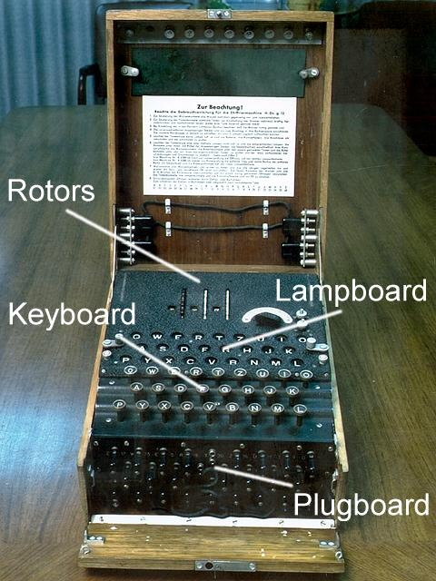
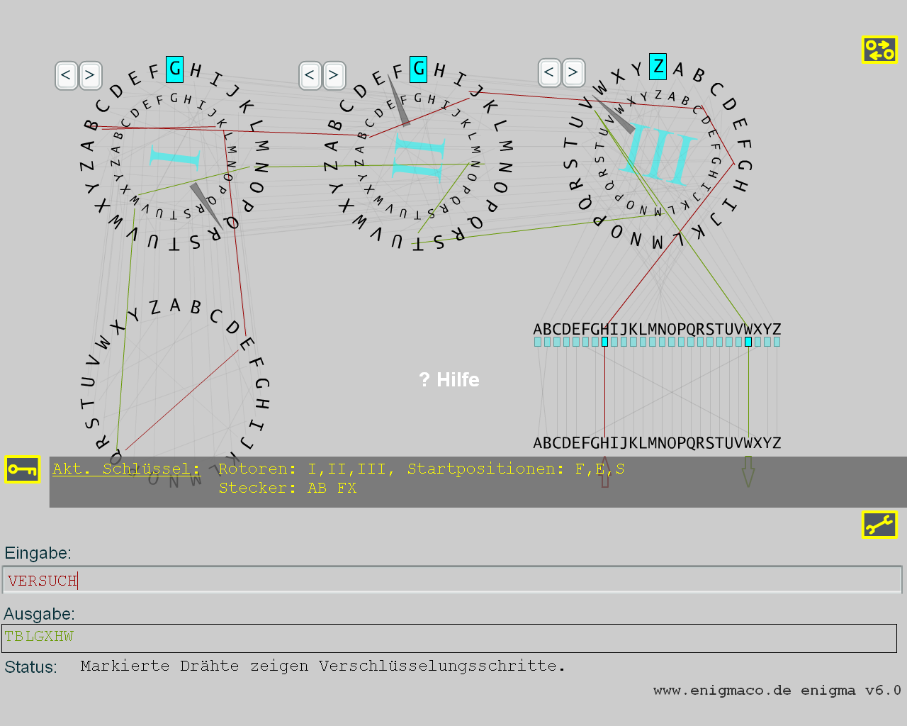

Die Enigma war ein Verschlüsselungsgerät, das im 2. Weltkrieg in sehr großer Stückzahl verwendet wurde, um die Nachrichten des deutschen Militärs zu verschlüsseln. Im Laufe der Zeit gab es viele Varianten: Am verbreitetsten war die Standard-Enigma-Maschine "Enigma I", die ab 1930 von der Wehrmacht eingesetzt wurde.
Historisch sind die Enigma und ihre Entschlüsselung sehr bedeutsam: Polnische und englische Kryptologen entschlüsselten sie und beeinflussten damit entscheidend den Kriegsverlauf zugunsten der Alliierten. Das Projekt Ultra, in dem diese Entschlüsselung durchgeführt wurde, hatte die allerhöchste Geheimhaltungsstufe, und wahrscheinlich wurde nie mehr so viel Aufwand getrieben wie damals, um ein einziges Verschlüsselungsverfahren zu knacken. Am Ende des 2. Weltkrieges arbeiteten in der Entschlüsselungszentrale in Bletchley Park rund 10.000 Menschen rund um die Uhr Schicht.
Bis 1945 konnte fast jede abgefangene Enigma-Nachricht von Wehrmacht, Kriegsmarine, Luftwaffe, Abwehr, SS, etc. innerhalb von 1-2 Tagen entschlüsselt werden, obwohl die deutschen Militärs weiter an die Sicherheit der Enigma glaubten.
In der Visualisierung von Frank Spieß wird die Standard-Enigma-Maschine der deutschen Wehrmacht mit 3 Rotoren simuliert.
Dabei wird für jeden eingegebenen Klartext-Buchstaben gezeigt, welcher Weg anhand der gegebenen Verdrahtung zu dem entsprechenden Geheimtextbuchstaben führt.
Weitere Informationen finden sich über Literatur zur Enigma oder Wikipedia:
http://de.wikipedia.org/wiki/Enigma_(Maschine)
http://en.wikipedia.org/wiki/Enigma_machine
Bemerkung 1: Komponenten der Enigma und Wiedergabe in der Visualisierungs-Maske
Die Enigma bestand aus einer Eingabe-Einheit (Tastatur / Keyboard) und einer Ausgabe-Einheit (Lämpchen, die den Geheimtextbuchstaben anzeigten / Lampboard). Sie verarbeitete nur die 26 Zeichen des Alphabets, und diese jeweils einzeln.
Zwischen Ein- und Ausgabe waren 5 Komponenten, die für die Verschlüsselung sorgten:
Im Reflektor und in den Rotoren waren die Eingangs- und Ausgangsbuchstaben jeweils durch eine feste Zuordnung vertauscht (feste Verdrahtung). Diese Rotoren waren anfangs den Alliierten nicht bekannt.
Die Zuordnung im Steckerbrett konnte dagegen variabel geändert werden (mit bis zu 13 vertauschbaren Verbindungen).
Weiterhin hatte man 5 Rotoren (mit jeweils verschiedener, aber fester Alphabetszuordnung), von denen man 3 beliebige auswählen und einsetzen konnte.
Das folgende Bild zeigt eine Entschlüsselung.
Der Schlüssel bestand also aus dem folgendem Set, das in Codebüchern festgelegt wurde:
Bemerkung 2: Schlüssel-Anzahl
Wenn die Zuordnung bei den Rotoren und dem Reflektor nicht bekannt war, ergab sich eine Schlüsselzahl aus der Anzahl möglicher Konfigurationen von ca. 10^114 (ca. 380 Bit). Waren die Verdrahtung von Rotoren und Reflektor und weitere operationale Beschränkungen (wie A darf nie auf A abgebildet werden) bekannt, reduzierte dies die Schlüsselzahl auf ca. 10^23 (76 Bit).
Die Benutzer damals vertrauten aufgrund der großen Schlüsselzahl der Sicherheit der Enigma (sie glaubten, dass dadurch ein Brute-Force-Angriff unmöglich sei).
Bemerkung Nachfolgeversion CrypTool 2 (CT2):
Mit CT2 kann man die Funktionsweise der 3-Rotor-Enigma nicht nur visualisieren,
sondern man kann auch sehr effizient Nachrichten mit ganz verschiedenen Enigma-Varianten ver- und entschlüsseln.
Außerdem bietet CT2 die Möglichkeit, eine verteilte Analyse für Enigma-Chiffrate durchzuführen.